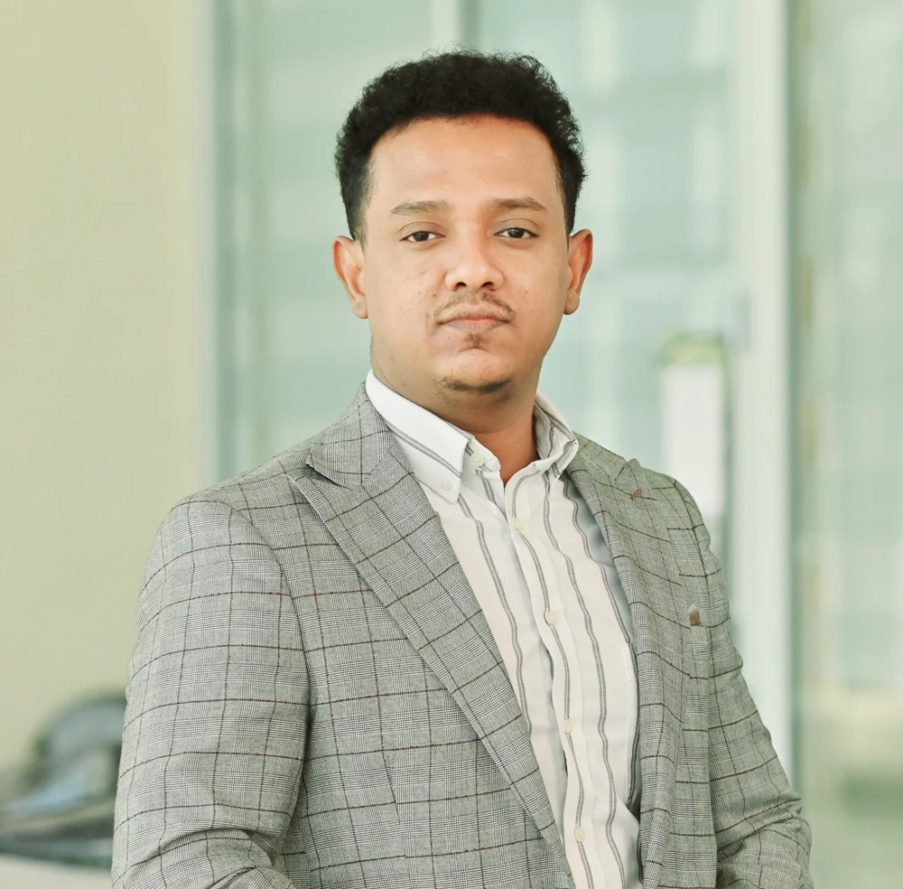
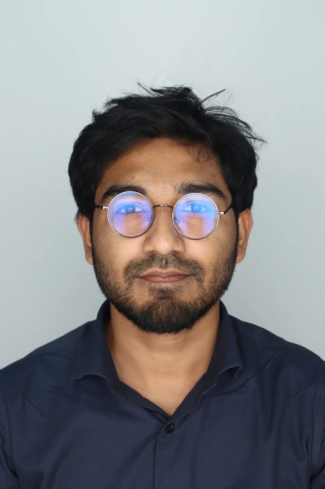
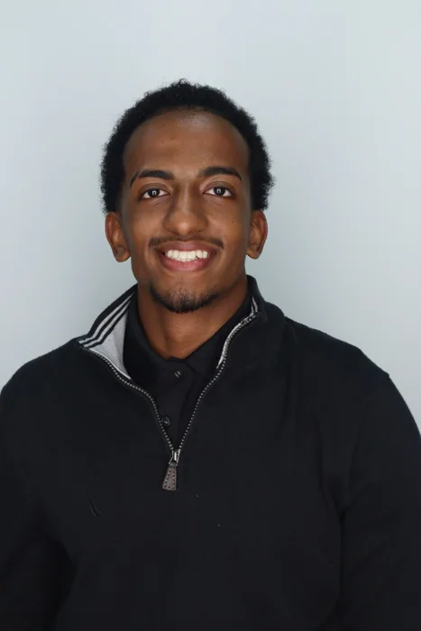

Principal Investigator
Natnael M. Negash, Ph.D.
Assistant Professor, Ingram School of Engineering, Texas State University.
Meet the students and researchers advancing safe, intelligent mobility at the SAMS Laboratory.
 Texas State University · SAMS Laboratory
Texas State University · SAMS Laboratory

Assistant Professor, Ingram School of Engineering, Texas State University.
Ph.D. student in Mechanical Engineering.
Research focus: autonomous driving, machine learning,
dynamic systems, and intelligent control.

M.Sc. student in Mechanical and Manufacturing Engineering
at Texas State University.

Undergraduate researcher at the SAMS laboratory.
Undergraduate researcher at the SAMS Laboratory.